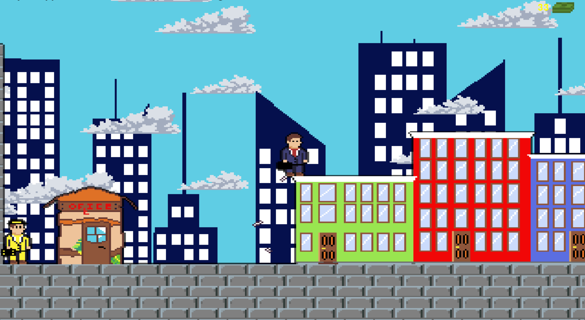

Language: Python (Pygame) | GMTK 2025 Game Jam, Summer 2025
A 2D platformer built for the GMTK 2025 Game Jam, created as team leader. Features robust collision detection, physics, branching dialogue trees driven by external JSON files, and handmade sprite animations.
